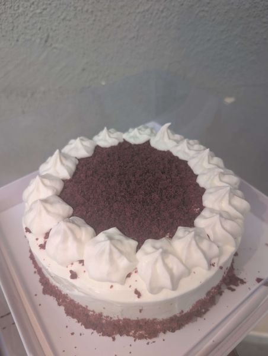
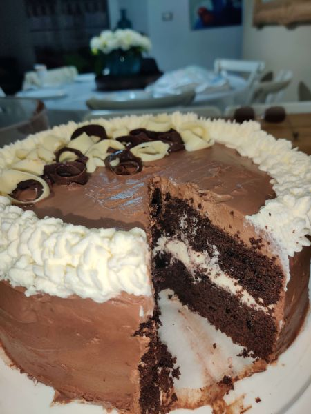
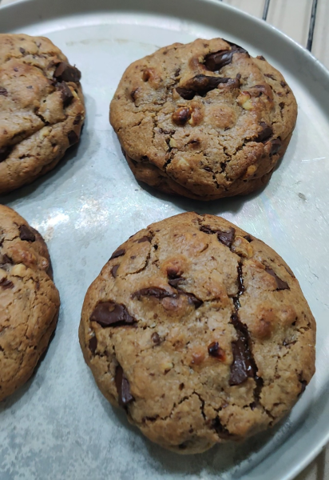
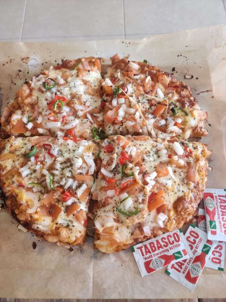
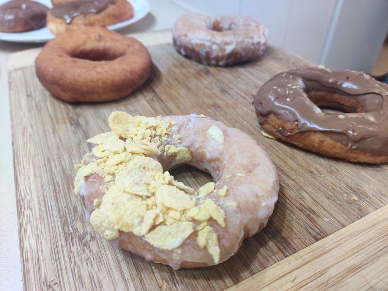
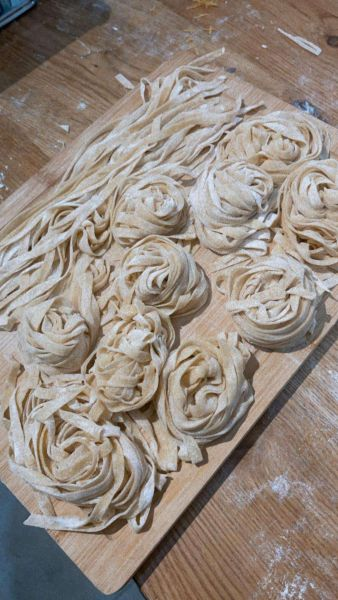
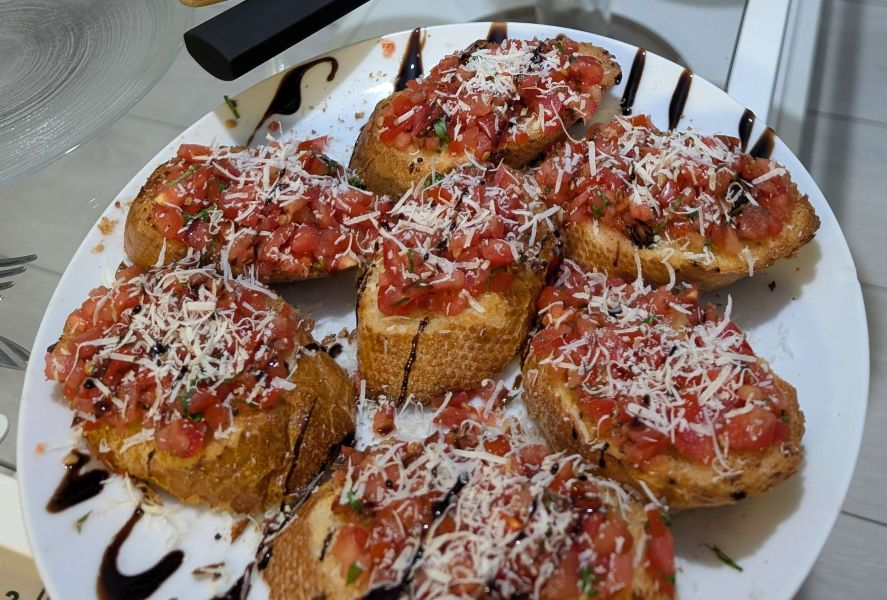
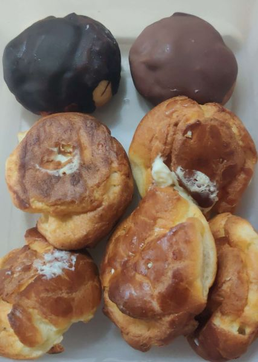
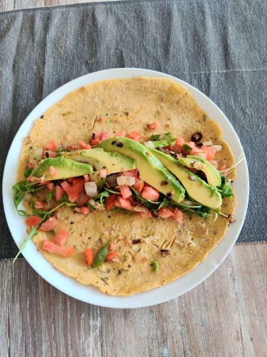
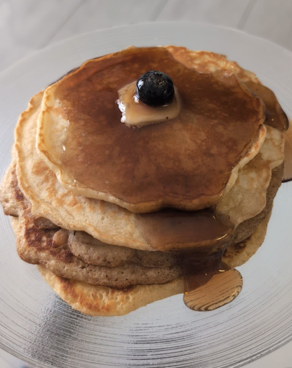

Sourdough is a naturally leavened bread made using a fermented
"starter" instead of commercial yeast. This slow process
relies on wild yeast and healthy bacteria to create a
signature tangy flavor, a chewy texture, and a crisp,
golden-brown crust.

Cakes Photography
Red Velvet.
Red velvet is a soft, moist cake featuring a mild cocoa flavor
and a signature tang from buttermilk. Famous for its striking
crimson color and velvety crumb, it is traditionally layered
with rich, smooth cream cheese frosting for a decadent finish.

Cakes Photography
Double-layered chocolate cake.
A timeless indulgence, chocolate cake features a rich, moist
crumb packed with deep cocoa flavor. Layered with velvety
chocolate buttercream or silky ganache, it delivers an
intense, melt-in-your-mouth experience that is the ultimate
treat for every chocolate lover.

Cookies Photography
Rich chocolate-chip cookie.
Our classic chocolate chip cookies are the ultimate comfort
treat. Baked with real butter and brown sugar, they feature
crispy edges and a soft, chewy center. Loaded with rich, melty
semi-sweet chocolate chips, every bite is a warm, gooey
delight.

Italian food
Vegetable Pizza.
A zestful savory treat, this pizza starts with our signature
crispy crust and tangy marinara. Topped with bubbling
mozzarella, it features fresh slices of juicy tomatoes, crisp
white onions, and spicy jalapeños for a vibrant, flavorful
kick in every bite.

Cookies Photography
Doughnut Variety.
Our doughnuts are fried to golden perfection, boasting a
light, pillowy texture. Whether dipped in classic glaze,
filled with rich cream, or decorated with colorful toppings,
these sweet treats are the perfect way to brighten your
morning or afternoon.

Italian food
Fresh Handmade Pasta.
Taste the difference with our fresh handmade pasta. Crafted
daily from scratch using premium flour and farm-fresh eggs,
our dough is lovingly rolled and cut by hand. It delivers a
rich flavor and tender, silky texture that dried pasta cannot
compare to.
Cookies Photography
Coconut covered delight.
Treat yourself to these bite-sized delights. We take a rich,
velvety chocolate fudge center and hand-roll it in sweet
shredded coconut. The contrast between the smooth cocoa and
the tropical coconut texture makes for an irresistible,
melt-in-your-mouth indulgence.

bruschetta Photography
Minty tomato bruschetta.
Enjoy a classic Italian favorite. We top our toasted
house-made rustic bread with a vibrant mix of diced
vine-ripened tomatoes, fresh basil, and minced garlic.
Finished with a drizzle of premium olive oil, it is the
perfect crisp and savory appetizer. Nadav is the savory
specialist and the heart behind our ovens. As the "Bread
Master," he oversees the creation of our rustic loaves and
savory dishes. Inspired by his mother’s traditional cooking
and refined through years of self-study, Nadav brings a
comforting, home-style touch to professional baking. His true
passion lies in the science of dough, ensuring every loaf has
the perfect crust and crumb. Noam brings the sweetness to
Yummi’s Bakery. As our lead "Pastry Artist," his focus is
entirely on the delicate cakes and decadent desserts that line
our shelves. A self-taught perfectionist, Noam built his
impressive skills through sheer determination and endless
practice in the kitchen. He pours his creativity into crafting
beautiful sweets that taste just as amazing as they look.

Cookies Photography
Pâte à choux.
Our classic choux pastry is the foundation for our finest
treats. This light, airy dough relies on steam to rise,
creating a crisp, golden shell with a hollow center—the
perfect vessel for our luscious creams and rich custards.

breakfest Photography
Red lentil avocado tortilla breakfest.
Start your day with a nutritious boost. Our house-made red
lentil tortillas are soft, protein-rich, and naturally
gluten-free. Topped with fresh, creamy avocado and a touch of
zesty seasoning, this breakfast offers a wholesome, vibrant
flavor combination you will love.

Sweets Breakfest Photography
Blueberry Pancakes Breakfest.
Start your morning with our fluffy, golden pancakes. Made from
scratch, our batter is loaded with plump, juicy blueberries
that burst with natural sweetness. Served warm and stacked
high with maple syrup, these are the ultimate comforting
breakfast treat.